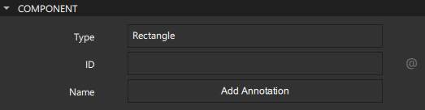
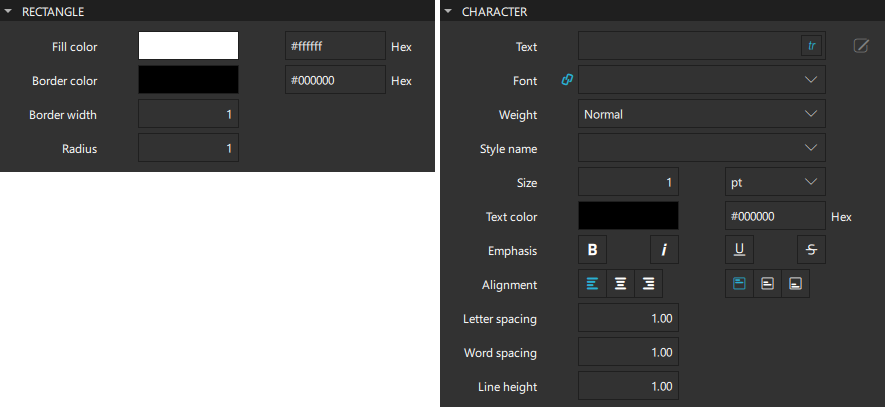
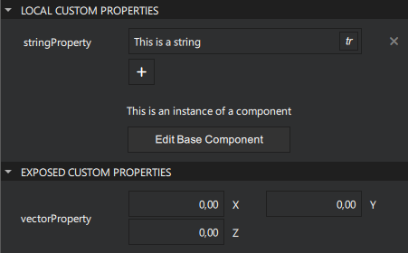
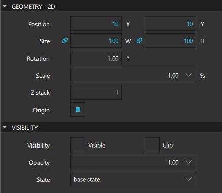
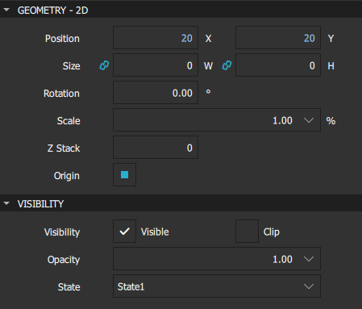
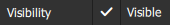
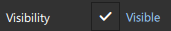
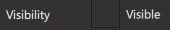
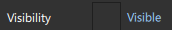

Properties
The Properties view displays all the properties of the selected component. The properties are grouped by type. The top part of the view displays properties that are common to all components, such as component type, ID, name, geometry, and visibility.

The bottom part of the view displays properties that have been defined for the component type. For example, the following image displays the predefined properties you can set for Rectangle and Text components.

Custom Properties
Custom Properties are properties that the user has added to the component.
There are two types of custom properties:
| Custom Property Type | Description |
|---|---|
| Local Custom Property | A property that has been added for a preset component. |
| Exposed Custom Property | A property that has been added inside a component. |

Summary of Properties View Buttons
The following table lists the Properties view buttons:
| Icon | Tooltip | Read More |
|---|---|---|
| Adds a property alias that you can use from outside of the component for the root component. You can use a menu item in the actions menu to add property aliases for property values of child components. | Adding Property Aliases | |
Opens a menu with actions for:
| ||
| Indicates that the value of the property is bound to the value of another property. Opens the same menu as the action icon. | Adding Bindings Between Properties |
Viewing Changes in Properties
The default values of properties are displayed in white color, while the values that you specify explicitly are highlighted with blue color. In addition, property changes in states are highlighted with blue.
This allows you to easily see which values are set in the component file for this component instance and which values are default characteristics of a component.
When editing states, you can easily see which values are explicitly set in the current state and which values are derived from the base state.
The following images illustrate this. In the base state, the Position and Size values are explicitly set and highlighted.

In State1, only Position is explicitly set and highlighted.

Resetting a property sets it back to the default value and removes the value from the component file.
Note: As a result, all boolean values can be visualized in four different ways.
For example, visibility can be visualized as follows:
 | TRUE | The component is visible by default. The visibility might be overridden by the visibility set in the base state. |
 | TRUE (highlighted) | The component is explicitly set to visible. |
 | FALSE | The component is hidden by default. The visibility might be overridden by the visibility set in the base state. |
 | FALSE (hightlighted) | The component is explicitly set to hidden. |
Multiselection
To modify the values of common properties of multiple components simultaneously, select the components in the Navigator, 2D or 3D view:
- On Windows, press and hold Ctrl and Shift, and then click the components to select them.
- On macOS, press Shift to select a range of components or Cmd to select multiple single components.
You can lock other components in Navigator to make multiselection easier.
Getting Help for Properties
- For information about setting common component properties, see Specifying Component Properties.
- For more information about the properties available for a component, press F1 or see Component Types and Scalable Layouts.